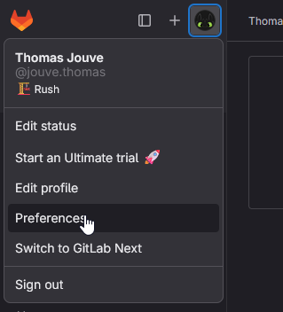
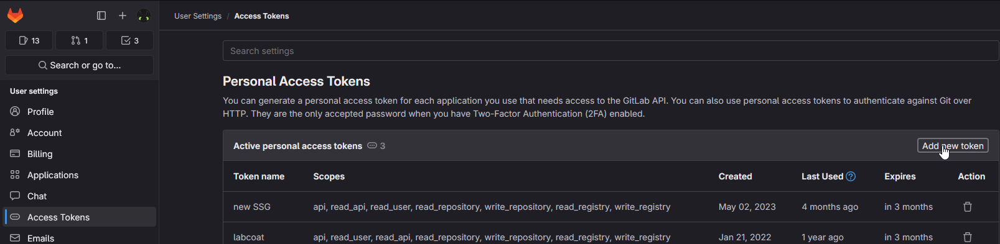
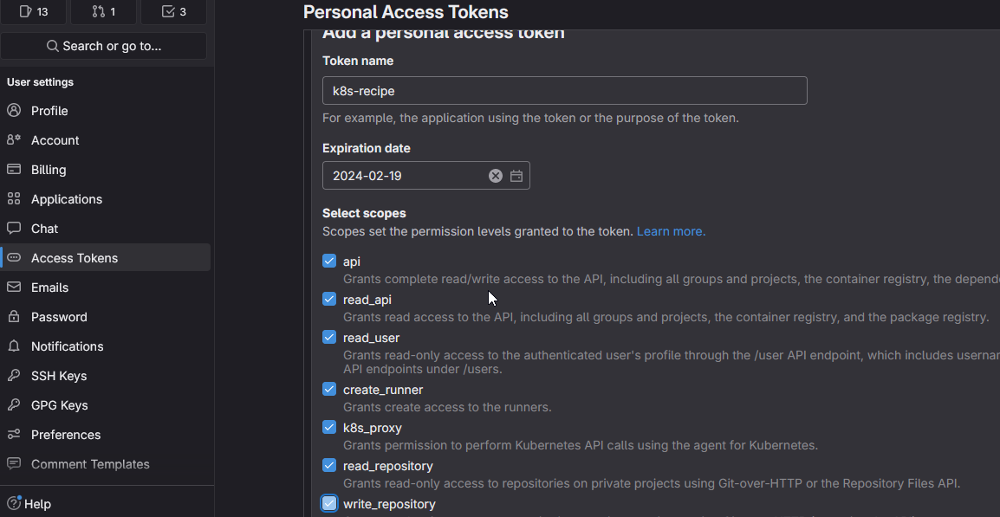
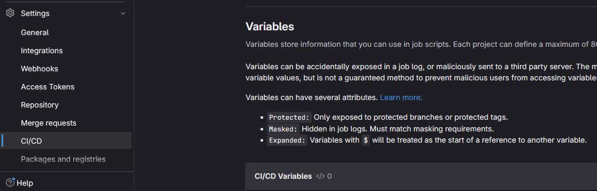
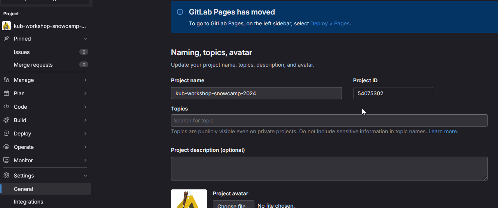

GitOps tu connais ?
Estimated time to read: 9 minutes
Ok, on a réussi notre petite recette. Tout est écrit mais ça serait encore mieux si on pouvait automatiser tout ça en utilisant Flux par exemple.
Pré-requis
Pour boostraper Flux (en gros l'installer dans votre cluster), il faut que la personne qui lance la commande ait les droits cluster admin sur le cluster Kubernetes cible. Il est aussi nécessaire que la personne qui lance la commande soit le propriétaire du projet GitLab, ou ait les droits admin d'un groupe GitLab.
N'oubliez pas de forker le projet pour pouvoir le modifier ET de basculer sur votre nouveau repo 😁
Info
Si vous avez fait la partie environnements gitlab avant celle-ci et que vous avez déjà forké le projet, pas besoin de faire un nouveau fork. Vous pouvez réutiliser le 1er.
Info
Si vous utilisez Gitpod n'oubliez pas de télécharger votre kubeconfig alias cluster-ovh-${TF_VAR_OVH_CLOUD_PROJECT_KUBE_NAME}.yml. Avec le fork vous allez démarrer avec un nouveau pod et par conséquence vos fichiers locaux ne seront plus accessibles.
Ensuite, il va nous falloir un token GitLab pour que Flux puisse se connecter à notre repo GitLab.
GitLab PAT (Personal Access Token)
On va récupérer le token et le stocker dans une variable d'environnement.
Comment récupérer un token GitLab
Pour créer un token GitLab, il faut aller dans votre profil GitLab, puis dans Preferences > Access Tokens


Et créer un token avec les bons scopes: 
Installation de Flux
La première étape est d'installer Flux CLI.
Cette fois c'est la bonne : on configure Flux
On va demander à la CLI d'initialiser Flux sur notre cluster et de se connecter à notre repo GitLab.
Tout est décrit dans le tuto Flux.
Info
Si la variable d'environement GITLAB_TOKEN n'est pas renseignée, le boostrap va demander de saisir le token.
Il est possible de fournir le token avec une commande du type: echo "<gl-token>" | flux bootstrap gitlab.
On lance le bootstrap sur le projet avec notre compte personnel:
flux bootstrap gitlab \
--deploy-token-auth \
--owner=<NAMESPACE_NAME> \
--repository=<PROJECT_STUG> \
--branch=main \
--path=flux/devoxx-cluster/ \
--personal
Il y a trois paramètres à remplacer :
- NAMESPACE_NAME : le groupe ou sous-groupe dans lequel vous voulez initialiser Flux
- PROJECT_STUG : le project dans lequel Flux va stocker les informations dont il a besoin
- path : le chemin où sont stocké les fichiers de configuration de Flux dans le repo
NAMESPACE_NAME + PROJECT_STUG doivent correspondre au chemin du repository dans lequel vous avez forké ce workshop.
Lorsque l'on utilise --deploy-token-auth, la CLI génère un token GL et le stock dans le cluster sous la forme d'une Secret qui s'appelle flux-system dans le Namespace flux-system.
Flux bootstrap output
► connecting to https://gitlab.com
► cloning branch "main" from Git repository "https://gitlab.com/yodamad-workshops/kub-workshop.git"
✔ cloned repository
► generating component manifests
✔ generated component manifests
✔ committed sync manifests to "main" ("4271d8d7adef5572f1031f0f21767d449d0ccbb4")
► pushing component manifests to "https://gitlab.com/yodamad-workshops/kub-workshop.git"
► installing components in "flux-system" namespace
✔ installed components
✔ reconciled components
► checking to reconcile deploy token for source secret
✔ configured deploy token "flux-system-main-flux-system-./flux/devoxx-cluster" for "https://gitlab.com/yodamad-workshops/kub-workshop"
► determining if source secret "flux-system/flux-system" exists
► generating source secret
► applying source secret "flux-system/flux-system"
✔ reconciled source secret
► generating sync manifests
✔ generated sync manifests
✔ committed sync manifests to "main" ("05dfd597d5959fda3a783f2336b65d1f1d7b121d")
► pushing sync manifests to "https://gitlab.com/yodamad-workshops/kub-workshop.git"
► applying sync manifests
✔ reconciled sync configuration
◎ waiting for Kustomization "flux-system/flux-system" to be reconciled
✔ Kustomization reconciled successfully
► confirming components are healthy
✔ helm-controller: deployment ready
✔ kustomize-controller: deployment ready
✔ notification-controller: deployment ready
✔ source-controller: deployment ready
✔ all components are healthy
Bien joué !
L'agent Flux va maintenant surveiller notre repo GitLab et appliquer les changements automatiquement.
Petite visite de notre nouvelle cuisine
Le cellier
Si on pull le repo GitLab, on peut voir que Flux a crée un nouveau repertoire flux/devoxx-cluster/flux-system qui contient la configuration de Flux :
kustomization.yamlest un index, on va lister ici les manifests qui doivent être pris en compte dans ce répertoire.gotk-components.yamlcontient la définition des RBAC et des CRDs (Custom Resource Definition) utilisées par Flux.gotk-sync.yamldéfinit la manières dont l'opérateur se connecte au repo au travers du KindGitRepositoryet le type Kustomization permet de configurer quels sont les manifest / configuration à scruter. Pour nous, tout ce qui se trouve dans./flux/devoxx-clustersera utilisé comme configuration.
Ici le fichier ./flux/devoxx-cluster/flux-system/gotk-sync.yaml contient la configuration de Flux pour se connecter à notre repo GitLab.
Notre première recette
On va pouvoir lui dire d'appliquer la configuration grace aux objets Kustomization.
Si on regarde par example le fichier flux/repo.yaml
| ./flux/repo.yaml | |
|---|---|
On peut voir que l'on décrit en language Flux un nouveau répertoire à surveiller ./flux/repository dans notre GitRepository:flux-system.
Définition des HelmRepository
Dans ce répertoire ./flux/repository on retrouve par example le fichier nginx.yaml :
| ./flux/repository/nginx.yaml | |
|---|---|
Cette fois-ci on configure un HelmRepository qui va permettre à Flux de récupérer les informations sur les charts disponibles dans le repo Helm.
On pourra faire référence à ce chart sous le nom nginx-ingress-controller.
Nouveaux commis
On va maintenant deplacer ce fichier repo.yaml dans le répertoire flux/devoxx-cluster/ qui est le seul, pour le moment, que connait Flux.
Effectivement le fichier gotk-sync.yaml indique que seul le répertoire ./flux/devoxx-cluster est scrupté par Flux :
| ./flux/devoxx-cluster/flux-system/gotk-sync.yaml | |
|---|---|
On envoie les commandes en cuisine
Et on push commit, car maintenant c'est Flux qui se charge de faire la synchronisation sur le cluster depuis notre repo.
cp flux/repo.yaml flux/devoxx-cluster/repo.yaml
git add flux/devoxx-cluster/repo.yaml
git commit -am ":satellite_orbital: Setup Helm repos" && git push
On peut observer la réconciliation avec la commande suivante :
On a quelque chose comme ça :
- il y a 2 répertoires à surveiller (2
Kustomization) - la synchronisation est active (
SUSPENDED : False) - et à jour (
READY : True)
Il indique aussi quelle est la révision utilisée pour la synchronisation (ici :main@sha1:c80d7d4c).
NAME REVISION SUSPENDED READY MESSAGE
flux-system main@sha1:c80d7d4c False True Applied revision: main@sha1:c80d7d4c
repos main@sha1:c80d7d4c False True Applied revision: main@sha1:c80d7d4c
On peux vérifier en regardant si il a bien créé nos resources HelmRepository :
NAMESPACE NAME URL AGE READY STATUS
flux-system cert-manager https://charts.jetstack.io 112s True stored artifact: revision 'sha256:c930db5052b76d7be3026686612fa09f89a23f8547a8ecad7496d788e34964e5'
flux-system external-secrets https://charts.external-secrets.io 112s True stored artifact: revision 'sha256:35fa1d6332232e3c6d032627547ffc74c7e61c4729ed1daa680b2202c61a78da'
flux-system nginx-ingress-controller https://kubernetes.github.io/ingress-nginx 112s True stored artifact: revision 'sha256:e6a6c9e8f3682deea82b3bc22506d4fdabd667ce37cb1d0f7509459ca92c3426'
Ingress Controller
Tout est prêt dans le répertoire ./nginx-ingress-controller/flux pour déployer notre Ingress Controller.
Le descriptif de notre recette est une Kustomization
Ici ce n'est pas une Kustomization mais une Kustomization 🧌
Il faut lire :
- Kustomization@kustomize.toolkit.fluxcd.io/v1 est la CRD de FLux pour les objects Flux (le liens vers un repo / repertoire / interval de scrapping)
- Kustomization@kustomize.config.k8s.io/v1beta1 est l'objet Kustomize de Kubernetes
Ici on déclare une recette avec le nom flux-nginx-ingress-controller et qu'il est nécessaire d'utiliser les fichiers nginx-ingress-controller.yaml et ns.yaml pour déployer notre Ingress Controller.
| ./nginx-ingress-controller/flux/ks.yaml | |
|---|---|
La definition de notre Namespace
Avec un simple fichier manifest vanilla :
| ./nginx-ingress-controller/flux/ns.yaml | |
|---|---|
Et la definition de notre HelmRelease
| ./nginx-ingress-controller/flux/nginx-ingress-controller.yml | |
|---|---|
Chaud devant !
Avant de lancer la commande en cuisine, soyons fou et supprimons notre Ingress Controller précédemment installé pour laisser faire Flux.
Ce n'est pas obligatoire, mais c'est pour voir la magie de Flux.
En fait Flux va juste réappliquer la configuration, donc si vous ne supprimez pas l'Ingress Controller, il va juste le mettre à jour.
Il utilisera install ou upgrade en fonction de l'état de l'objet HelmRelease.
helm list -A
helm uninstall ingress-nginx -n nginx-ingress-controller
helm list -A
kubectl get all -n nginx-ingress-controller
kubectl delete ns nginx-ingress-controller
kubectl get ns
On envoie la sauce
On va maintenant déplacer le fichier flux/nginx-ingress-controller.yaml dans le répertoire flux/devoxx-cluster/ comme pour les repos Helm.
| ./flux/nginx-ingress-controller.yaml | |
|---|---|
cp flux/nginx-ingress-controller.yaml flux/devoxx-cluster/nginx-ingress-controller.yaml
git add flux/devoxx-cluster/nginx-ingress-controller.yaml
git commit -am ":satellite_orbital: Setup Ingress Controller" && git push
helm list -A
echo "Helm list ne nous retourne rien car c'est Flux qui gére maintenant"
sleep 20
echo "On utilise : "
kubectl get HelmRepository -A
kubectl get HelmChart -A
kubectl get HelmRelease -A
kubectl get ns
kubectl get all -n nginx-ingress-controller
External Secrets
On va maintenant déployer notre External Secrets. Comme ça pas besoin de stocker les secrets à la main.
Setup des secrets
Commençons par créer les variables d'environnement dans notre repo GitLab. (Ils ne sont pas repris lors du fork et heureusement ...).
- Soit on passe par l'UI de Gitlab

- Soit on utilise l'API de Gitlab
Il vous faut l'ID du projet, vous pouvez le trouver ici :

curl --request POST --header "PRIVATE-TOKEN: $GITLAB_TOKEN" \
"https://gitlab.com/api/v4/projects/${PROJECT_ID}/variables" \
--form "key=API_MAIL" --form "value=${API_MAIL}"
curl --request POST --header "PRIVATE-TOKEN: $GITLAB_TOKEN" \
"https://gitlab.com/api/v4/projects/${PROJECT_ID}/variables" \
--form "key=API_KEY" --form "value=${API_KEY}"
Il ne nous reste plus qu'à :
- créer notre
Secretdans notre cluster Kubernetes comme vu précédement, mais cette fois avec votre compte. - modifier le fichier
./external-secrets/flux/external-secrets-secret-store.ymlpour y mettre votre ID project.
| ./external-secrets/flux/external-secrets-secret-store.yml | |
|---|---|
Présentation de notre kustomization
| ./external-secrets/flux/ks.yml | |
|---|---|
- Création du NS
- Déployement des CRDS (Custom Resource Definition)
- Déployement de l'opérateur
- Déployement des CRS (Custom Resource) les différents providers (ici GitLab)
- La définition de notre secret store
Chaud devant !
Fin prêt pour lancer la commande :
cp flux/external-secrets.yaml flux/devoxx-cluster/external-secrets.yaml
git add flux/devoxx-cluster/external-secrets.yaml
git commit -am ":satellite_orbital: Setup External Secret" && git push
External DNS && Cert-manager
Un dernier petit tips pour la route :
| ./flux/cert-manager.yaml | |
|---|---|
dependsOn permet de définir une dépendance entre les différents objets Flux.
flowchart TD
A[Cert Manager] -->|dependsOn| B[external-dns];
A[Cert Manager] -->|dependsOn| C[nginx-ingress-controller];
B -->|dependsOn| D[external-secrets];On s'assure ainsi que les différentes recettes sont appliquées dans l'ordre.
Retournons à la recette pour encore plus de découvertes ➡️